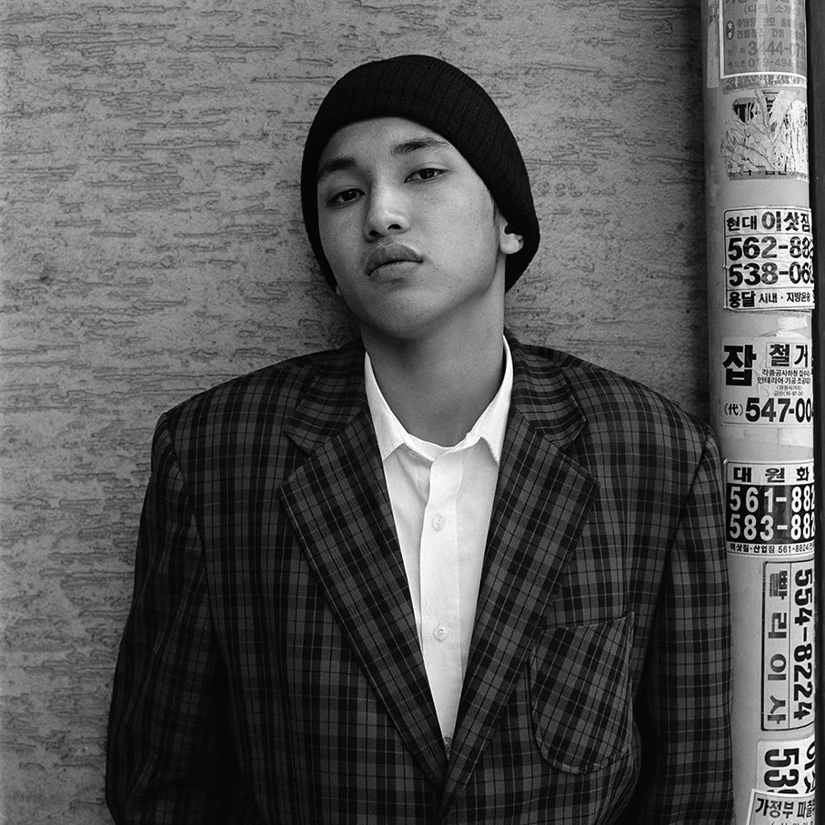
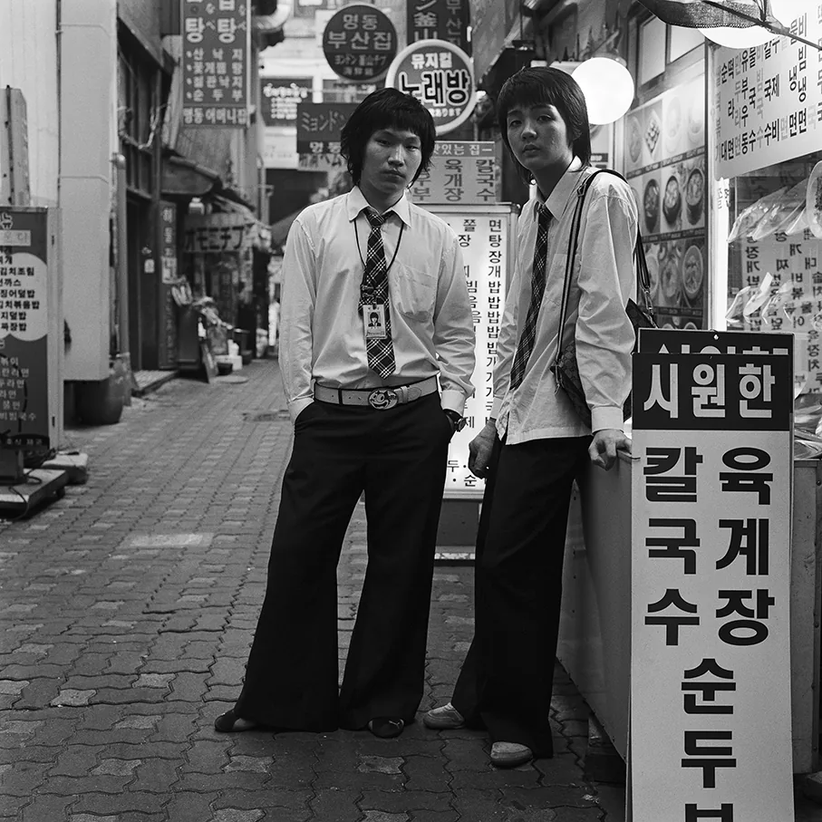
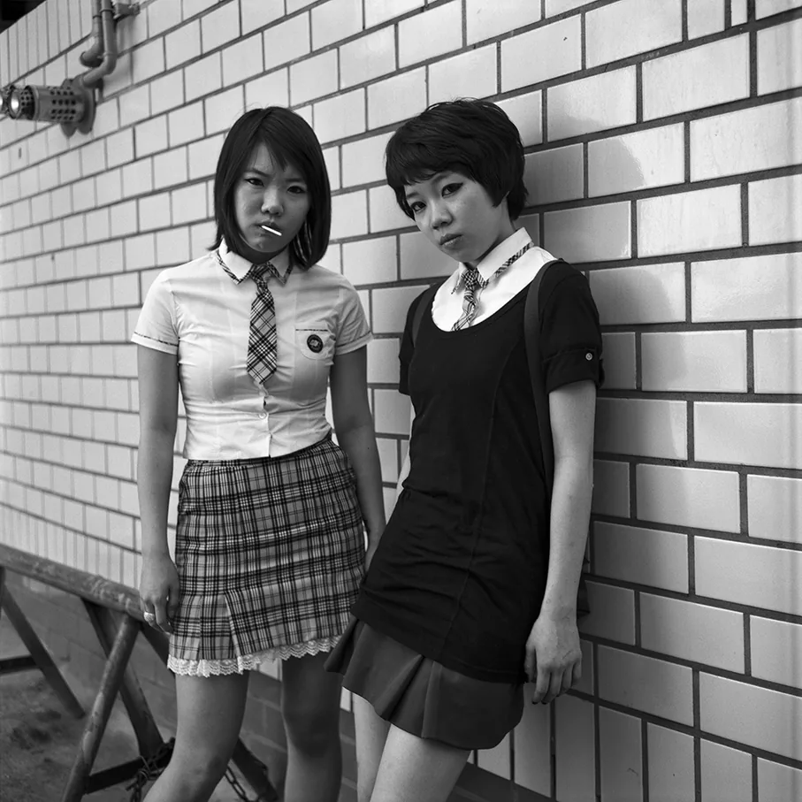
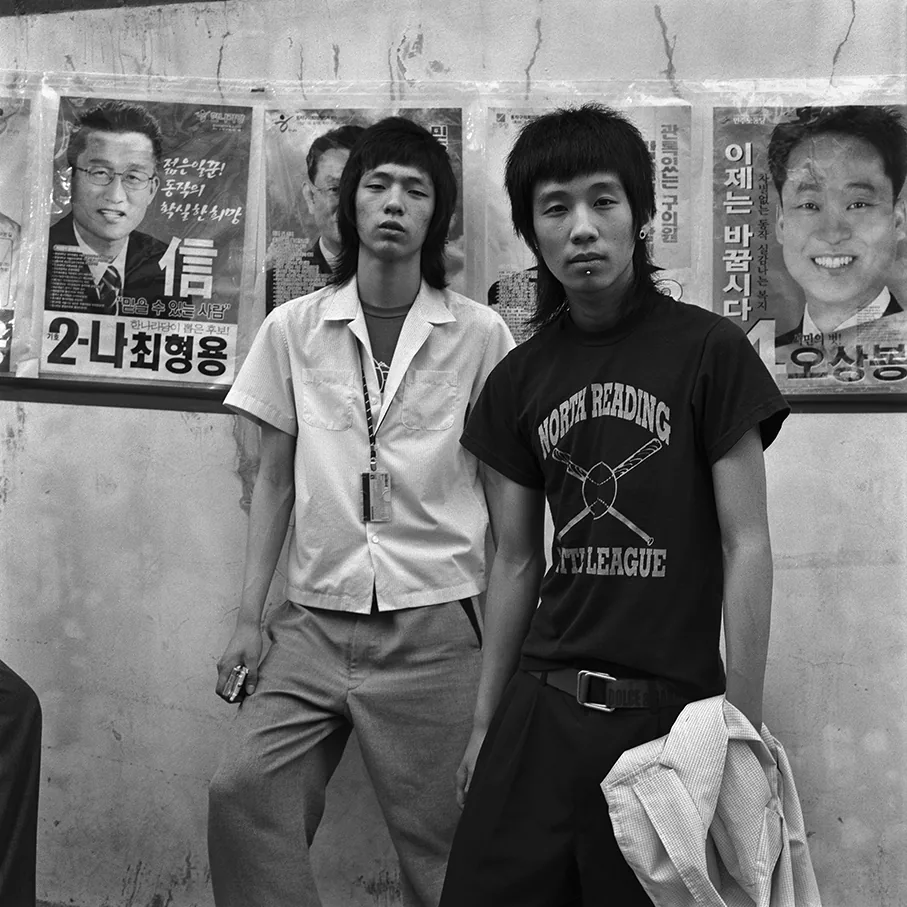
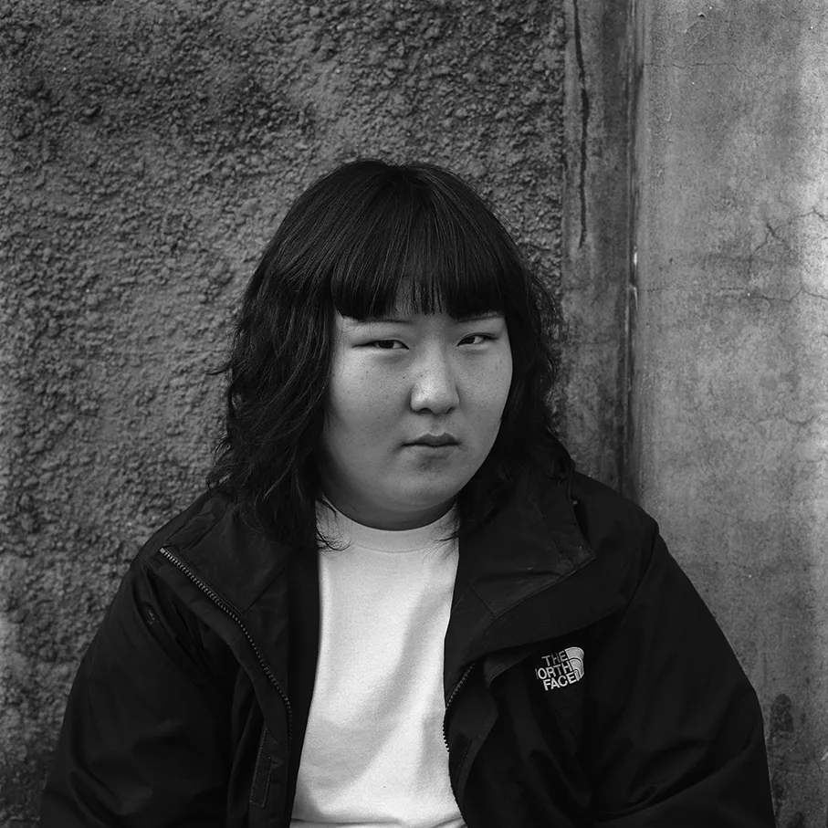
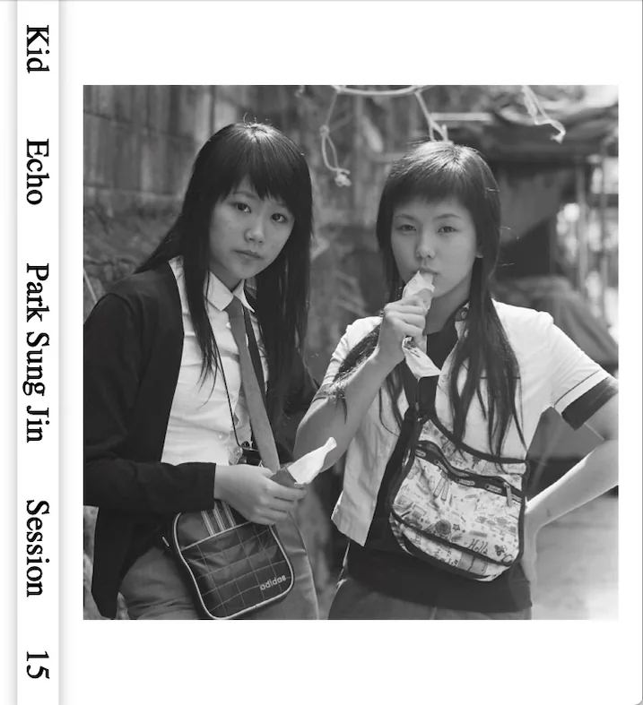

흑백사진 속 십대들은 카메라를 피하지 않는다. 넥타이는 느슨하고, 교복은 몸에 맞게 고쳐 입었다. 비니를 쓰거나 체크무늬 재킷을 걸친 채 아무렇지 않게 정면을 본다. 박성진의 새 사진집 《Kid Echo》에 실린 사람들이다. 2000년대 서울의 신사동과 가리봉, 청량리, 왕십리, 명동에서 만났다.
찍은 지 스무 해가 넘었다. 그런데 사진은 한 시절의 유행을 보여 주는 자료로 끝나지 않는다. 프레임 안의 사람들은 지금도 누군가를 기다리거나, 막 골목을 빠져나갈 것처럼 서 있다.
2014년에는 책에 넣지 못했다
《Kid Echo》는 뉴욕의 독립 사진책 출판사 Session Press 가 2026년 9월에 펴낸 152쪽 하드커버다. 실린 사진은 모두 처음 공개된다. 박성진의 대표작 《Kid Nostalgia》(2014)와 같은 시기에 찍었지만 그때 책에는 들어가지 못했다.
이유는 사진 바깥에 있었다. 작가는 AnOther 와의 인터뷰에서, 당시 서울에서는 이 사진들이 한국 청소년의 모습으로 '적절하다'고 받아들여지지 않을 수 있다고 판단했다고 말했다. 그때 서울에서 이런 책을 내는 일도 쉽지 않았다. 사진은 그대로였고, 사진을 볼 눈이 아직 없었다.

교복 안에서 만든 각자의 모양
사진 속 교복은 모두를 똑같이 묶는 옷이면서, 저마다의 취향을 드러내는 재료이기도 하다. 작가가 기억하는 남학생들은 바지를 나팔바지처럼 넓게 입거나 반대로 아주 좁게 줄였다. 강남의 몇몇 학생은 교복을 힙합 스타일로 바꿔 입었다. 여학생들은 2006년에서 2007년 무렵부터 긴 치마의 허리를 말아 올려 미니스커트처럼 입었다. 교문 안에서는 다시 무릎까지 내려야 했다. 같은 규칙 아래서 저마다 조금씩 손댄 자리가 이 사진들의 리듬을 만든다.

그렇다고 작가가 이들을 어떤 하위문화의 표본으로 묶지는 않는다. 그가 찍으면서 본 것은 교복보다 교복을 입는 방식이었다. 자세와 표정, 시선에 잠깐 비치는 감정의 긴장이다. Session Press 는 박성진이 찾은 것을 '감정의 순간'이라고 소개한다. 앙리 카르티에 브레송의 '결정적 순간'과는 다르다. 구도를 완성하거나 이야기를 맺는 순간이 아니라, 찍히는 사람이 긴장을 풀었을 때 드러나는 존재감에 가깝다.

작은 암실에서 현상한 흑백
박성진은 서울에서 태어나 1987년 십대에 뉴욕으로 건너갔다. 프랫 인스티튜트(Pratt Institute)에서 회화와 사진을 공부했고, 한국에 돌아와 서울과 그 주변을 걸으며 만난 십대들을 찍었다.
왜 흑백이었을까? 작가는 흑백이 자연스럽게 느껴졌고, 작은 암실에서도 직접 현상할 수 있어서 좋았다고 말했다. 그러면서도 흑백사진은 '완전히 현실적이지 않다'고 본다. 간판과 교복과 골목을 찍었지만 색을 덜어 내자 사진은 어느 해의 풍속 기록에서 한 걸음 비켜선다. 남는 것은 얼굴의 밝기, 벽과 옷감의 질감, 서로 다른 검정 사이의 계조다.
그 계조는 책의 종이로 이어진다. 작가가 직접 편집한 《Kid Echo》는 두꺼운 무광지에 인쇄했다. 《Kid Nostalgia》가 뒷모습과 몸의 일부, 주변 풍경까지 섞어 썼다면, 새 책은 정면을 보는 인물사진에 오래 머문다. 사진은 Session Press 를 세운 미와 스스다(Miwa Susuda)와 작가가 함께 골랐고, 대부분 정면 초상이다. 독자는 한 시대의 '청소년 문화'를 훑기보다 한 사람씩 눈을 맞추며 쪽을 넘기게 된다.

스무 해 뒤에야 할 수 있었던 편집
《Kid Echo》가 흥미로운 것은 지난 필름이 지금에 닿는 방식 때문이다. 찍을 당시 반응이 미지근했던 사진들은 2024년 말이나 2025년 초, 미와 스스다가 연락해 오면서 다시 꺼내졌다. 작가가 필름을 버리지 않고 두었고, 책을 내는 환경과 청소년을 보는 시선이 달라졌다. 두 번째 책은 그 둘이 겹쳐서 나왔다.
그렇다고 사진들이 지금의 눈에 맞춘 깔끔한 사회사로 정리되지는 않는다. 작가는 한국 현대사의 상징을 의식하고 찍지 않았다고 말한다. 서울이라는 곳의 색과, 어디서나 되풀이되는 청춘의 감각이 함께 보였을 뿐이다. 사진 속 사람들은 '2000년대 한국 청소년'이라는 설명에 들어가면서도 그 설명보다 크다. 카메라 앞에서 이 십대들은 자기가 어떻게 보일지 알았고, 정해진 옷차림 안에서 스스로를 만들고 있었다.

스무 해쯤 지나 이 사진들을 다시 보며, 작가는 자신도 그 아이들 틈에 있었던 것 같다고 했다. 이제는 그도 다른 사람들처럼 바깥에서 사진을 본다. 하지만 그 안에는 찍힌 사람과 찍은 사람의 성장통이 함께 남아 있다. 《Kid Echo》는 지난 시절을 곱게 싸는 향수에서 멈추지 않는다. 어떤 얼굴이 한 시대를 대표해도 된다고 여겨졌는지, 어떤 사진이 책에서 빠졌는지 보여 준다. 그리고 남겨 둔 필름을 다시 펼쳤을 때 과거의 뜻이 어떻게 바뀌는지도.
도서 정보

- 제목 《Kid Echo》
- 사진·편집 박성진(Sung Jin Park)
- 출판 Session Press, 2026년 9월
- 사양 하드커버, 152쪽, 240 × 290mm
- ISBN 979-8-234-03383-3
- 디자인 Alex Lin(Studio Lin)
- 인터뷰 Marc Feustel · 에디터 Susanna Chang
- 리소그래피 Sebastiaan Hanekroot(Colour & Book) · 인쇄 Wilko Art Books
- 유통 Dashwood Books(미국), Perimeter Books(호주·뉴질랜드), twelvebooks(일본)
책 소개와 구매는 Session Press 도서 페이지에서, 작가 인터뷰는 AnOther 기사에서 볼 수 있다.